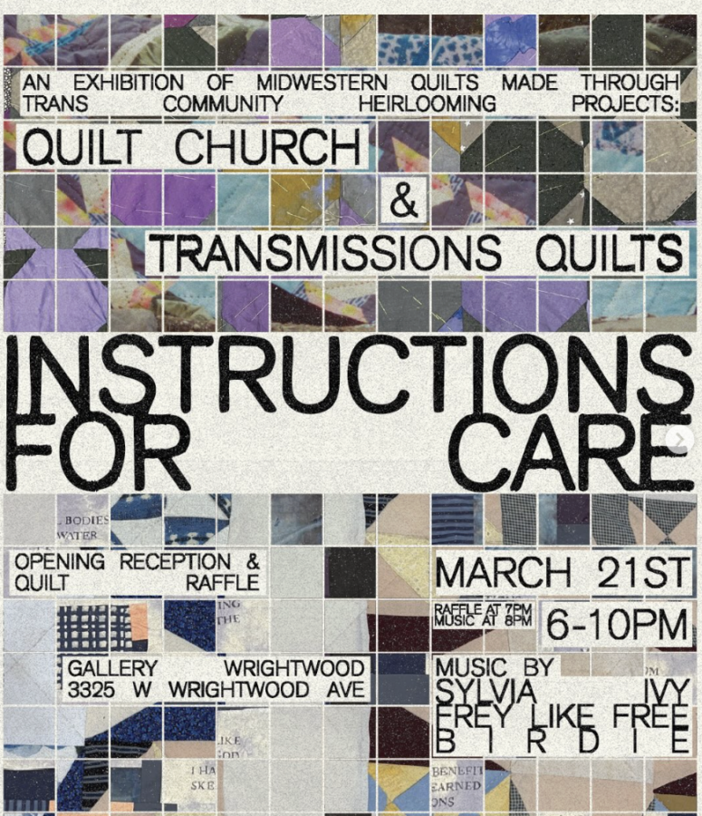

Instructions for Care
You are enthusiastically invited to join us for our next Gallery Wrightwood art show, “Instructions For Care” opening in our sanctuary on March 21 from 6-10pm, featuring 2 years worth of Quilt Church projects (a Chicago based hand quilting project run by artist Eve Emrich )alongside trans heirloom quilts and curtains made through the Transmissions Quilts Project (a project run by Berkeley-based artist and educator Cordy Joan). The show intertwines and highlights queer textiles made in community that aim to connect trans and queer people to themselves and each other through time.
The opening night on March 21st will feature a raffle for the chance to win the two latest Quilt Church quilts, with all funds raised being split between the prison abolition orgs Midwest Immigration Bond Fund and Walls Turned Sideways. After the raffle drawing at 8pm, we will have three musical performances from local Chicago musicians!